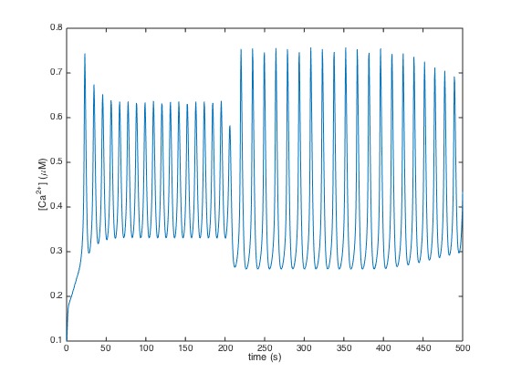
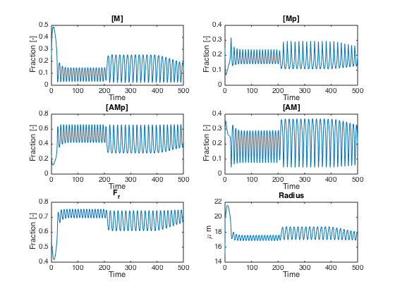
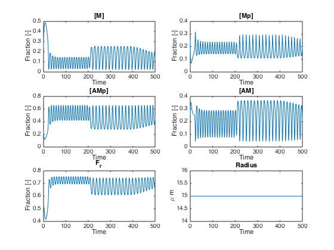

Demonstration script for new NVU model
Contents
Construct NVU
The NVU consists of a number of submodules, implemented as MATLAB classes, presently an astrocyte, a lumped SMC/EC model, and a model of the wall mechanics.
The parameters of each of these submodules are specified when the modules are constructed, here in the call to NVU, see for example the SMCEC part of the NVU call below:
Options for the ODE solver (currently ode15s) are provided by specifying the odeopts parameter. The code works fine with default tolerances.
odeopts = odeset('Vectorized', 1); nv = NVU(Astrocyte(), ... WallMechanics(), ... SMCEC('J_PLC', 0.4), ... 'odeopts', odeopts);
Other parameters you can set are
T: A vector of time values to evaluate the model at u0: initial conditions, see section below for example of how to do this
The other properties of the model are for internal use. They are not implemented as private properties, since for simplicity I've made everything public, but this is a potential change
The different modules are nv.smcec, nv.astrocyte, nv.wall. For more information about these see the documentation pages for these models.
Run a basic simulation
To run a simulation, just call the simulate method. Run simulation
nv.simulate()
Elapsed time is 9.150766 seconds.
Lists of quantities that can be retrieved from the NVU model after simulation are given in the documentation pages of the individual model components.
Model components are retrieved using the out method as follows, where we do a simple plot of intracellular calcium from the SMC:
% Plot, e.g. Ca_i plot(nv.T, nv.out('Ca_i')) xlabel('time (s)') ylabel('[Ca^{2+}] (\muM)')
Changing parameters, initial conditions, simulation time
Changing parameters and inintial conditions involves adjusting properties of the model components of the NVU object.
Parameters can be adjusted directly like so:
nv.smcec.params.J_PLC = 0.18;
Initial conditions can also be done in a single statement, but you end up with fairly long code lines, so the two-step method might be simpler if you're doing more than one:
nv.astrocyte.u0(nv.astrocyte.index.K_p) = 12; % Alternative way -- has the same effect. These objects are passed by % reference so you can do this a = nv.astrocyte; a.u0(a.index.K_p) = 12;
You can also adjust the simulation time:
nv.T = linspace(0, 1000, 2000);
To have make these changes have effect, you need to rerun the model
nv.simulate()
Elapsed time is 1.876332 seconds.
Recreate the wall plot from previous code
We'll reset our parameters and time back to where they were. Don't forget you can look up default values and initial conditions on the model documentation pages.
nv.smcec.params.J_PLC = 0.4; nv.astrocyte.u0(nv.astrocyte.index.K_p) = 3e3; nv.T = linspace(0, 500, 1000); nv.simulate(); subplot(3, 2, 1) plot(nv.T, nv.out('M')) xlabel('Time') ylabel('Fraction [-]') title('[M]') subplot(3, 2, 2) plot(nv.T, nv.out('Mp')) xlabel('Time') ylabel('Fraction [-]') title('[Mp]') subplot(3, 2, 3) plot(nv.T, nv.out('AMp')) xlabel('Time') ylabel('Fraction [-]') title('[AMp]') subplot(3, 2, 4) plot(nv.T, nv.out('AM')) xlabel('Time') ylabel('Fraction [-]') title('[AM]') subplot(3, 2, 5) plot(nv.T, nv.out('F_r')) xlabel('Time') ylabel('Fraction [-]') title('F_r') subplot(3, 2, 6) plot(nv.T, 1e6 * nv.out('R')) xlabel('Time') ylabel('\mu m') title('Radius')
Elapsed time is 8.912883 seconds.
Disable one of the variables
It is straightforward to disable one of the variables. This sets its ODE to du/dt = 0, so it remains at its initial condition for the duration of the simulation.
nv.wall.enabled(nv.wall.index.R) = false; nv.simulate() subplot(3, 2, 1) plot(nv.T, nv.out('M')) xlabel('Time') ylabel('Fraction [-]') title('[M]') subplot(3, 2, 2) plot(nv.T, nv.out('Mp')) xlabel('Time') ylabel('Fraction [-]') title('[Mp]') subplot(3, 2, 3) plot(nv.T, nv.out('AMp')) xlabel('Time') ylabel('Fraction [-]') title('[AMp]') subplot(3, 2, 4) plot(nv.T, nv.out('AM')) xlabel('Time') ylabel('Fraction [-]') title('[AM]') subplot(3, 2, 5) plot(nv.T, nv.out('F_r')) xlabel('Time') ylabel('Fraction [-]') title('F_r') subplot(3, 2, 6) plot(nv.T, 1e6 * nv.out('R')) xlabel('Time') ylabel('\mu m') title('Radius')
Elapsed time is 8.965165 seconds.